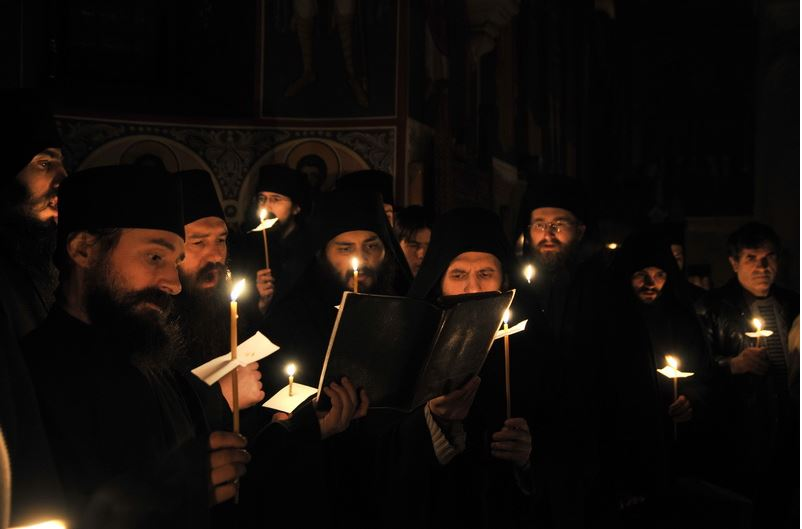

Mănăstirea Putna este un lăcaș monahal ortodox, unul din cele mai importante centre culturale, religioase și artistice românești. A fost supranumită „Ierusalimul Neamului Românesc” (Mihai Eminescu).Mănăstirea se află la 33 km nord-vest de orașul Rădăuți, în județul Suceava, în nordul Moldovei. Mănăstirea a fost un important centru cultural; aici s-au copiat manuscrise și au fost realizate miniaturi prețioase. Lăcașul deține un bogat muzeu mănăstiresc, cu broderii, manuscrise, obiecte de cult, icoane etc.
Centru de cultura
-
 Broderii si tesaturi
Broderii si tesaturi -
 Sculptura in lemn
Sculptura in lemn - Clopote
Evenimente
Evenimente organizate cu ocazia diferitelor sarbatori crestinesti la Manastirea Putna